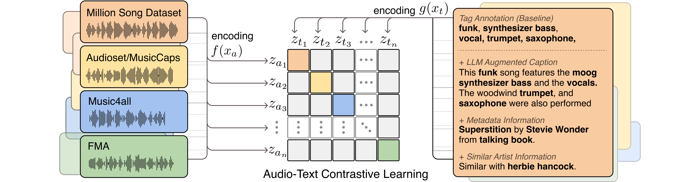

TTMR++: Enriching Music Descriptions with a Finetuned-LLM and Metadata for Text-to-Music Retrieval
Enriching Music Descriptions with a Finetuned-LLM and Metadata for Text-to-Music Retrieval, ICASSP 2024 (submitted)SeungHeon Doh, Minhee Lee, Dasaem Jeong, Juhan Nam- Paper on Arxiv (Update after review process)
- Implementation Code (Update after review process)
- Dataset Code (Update after review process)
Abstract
Text-to-Music Retrieval, finding music based on a given natural language query, plays a pivotal role in content discovery within extensive music databases. To address this challenge, prior research has predominantly focused on a joint embedding of music audio and text, utilizing it to retrieve music tracks that exactly match descriptive queries related to musical attributes (i.e. genre, instrument) and contextual elements (i.e. mood, theme). However, users also articulate a need to explore music that shares similarities with their favorite tracks or artists, such as \textit{I need a similar track to Superstition by Stevie Wonder}. To address these concerns, this paper proposes an improved Text-to-Music Retrieval model, denoted as \textbf{TTMR++}, which utilizes rich text descriptions generated with a finetuned large language model and metadata. To accomplish this, we obtained various types of seed text from several existing music tag and caption datasets and a knowledge graph dataset of artists and tracks. The experimental results show the effectiveness of TTMR++ in comparison to state-of-the-art music-text joint embedding models through a comprehensive evaluation involving various musical text queries.
Testset Demo
🌟 "In order to substantiate the model's prowess in generalization, we meticulously curated a testset from a dazzling array of 2.8k samples sourced from the music caption evaluation split. This demonstration is set to unveil the dynamic interplay of semantic captions, tags, and artist conditions in a riveting search scenario. Moreover, we are delighted to present comprehensive annotations for the music captions." 🎶
Query: The main soundtrack of an arcade game. It is fast-paced and upbeat, with a catchy electric guitar riff. The music is repetitive and easy to remember, but with unexpected sounds, like cymbal crashes or drum rolls
| Similar Music 1 | Similar Music 2 | Similar Music 3 |
|---|---|---|
| This instrumental funk song is a low quality recording. This song starts off with a bass playing a funky and groovy lick accompanied by a percussion playing a fill. Then a synth plays a lead using string sounds. This is accompanied by distortion guitars playing power chords. The bass continues to play funky fills and the percussion continues to play a fast beat. This song can be played in an action sequence in a movie | The epic music excerpt starts off full force with an orchestral ensemble playing loud blocks of sound. The taiko drums play with the same rhythm the orchestra does. After a few seconds the volume is dialed down and one can hear a melody being created from electronic sounds and possibly a bass guitar. In the background a metallic percussive instrument is being played with bare hands | The low quality recording features a manically played piano melody over punchy kick and snare hits, followed by uptempo hi hats and shimmering open hats. It sounds aggressive, mani and thin, as it lacks low frequencies |
Qeruy: funk song with female vocal, similar with Herbie Hancook style'
| Similar Music 1 | Similar Music 2 | Similar Music 3 |
|---|---|---|
| The song feels funky and soulful. There's a rumbling funky bassline, and an electric guitar playing intermittent licks. The drumming sticks on the hi-hats for the feeling of a build-up;. The female vocalist has a powerful, soulful voice. | The Funk song features a flat male vocal singing over widely spread, funky electric guitar chords, groovy bass guitar and energetic drums. It gives off happy and fun vibes, as it is probably very good for dancing with your friends (While the annotation may have some imperfections, Our retrieval results flawlessly pinpoint 'female vocals') |
The female voice is singing in the mid range and with delay and reverb on her voice. The bass is playing long notes ... The drums are playing a rather complex groove. An e-guitar is playing single notes contributing to the rhythm while another guitar is playing an almost looped melody on top.... Synthesizer hits and keys are adding more little elements... |
Query: melodic techno
| Similar Music 1 | Similar Music 2 | Similar Music 3 |
|---|---|---|
| The drums are playing a four on the floor techno rhythm with hihats and a strong kick. A synthetic bass follows the kick with almost just a single note playing. Panned to the left and right side of the speakers you can hear a monotone, repeating synth melody. This song may be playing in a technoclub | This is an EDM/techno music piece with a loud synth lead. There is a strong bass and an upbeat electronic drum beat in the background creating an atmosphere of high energy which is essential to electronic dance music. This music could be used in nightclubs, techno DJ sets and EDM venues | This song contains a lot of different synthesizer sounds. One is playing a lead melody in a higher register while two others are playing a rhythmic repeating melody in the mid and low register. This song may be playing in a club |